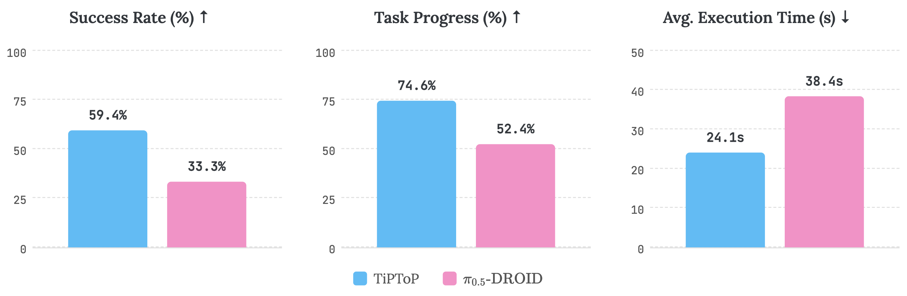

Introducing TiPToP: a manipulation system that zero-shots open-world tasks from pixels and language using vision foundation models and GPU-parallelized Task and Motion Planning (TAMP).
TiPToP performing various manipulation tasks across different objects, environments, and robot embodiments.
Perception: FoundationStereo (depth estimation) + M2T2 (6-DoF grasp prediction) + Gemini VLM (semantic grounding) + SAM-2 (object segmentation) → 3D scene representation
Planning: cuTAMP synthesizes robot actions by exploring thousands of candidate
Walk-through of TiPToP's pipeline: perception modules (depth, grasps, semantic grounding) feed into GPU-parallelized TAMP planning, which outputs robot actions.
Simple task: "Place the peanut butter crackers onto the tray" — in a scene full of different cracker packets.
TiPToP succeeds 5 out of 5 trials.
π₀.₅-DROID (SOTA VLA, 350+ hrs of embodiment-specific data) fails all 5 trials.
TiPToP does this by reasoning at
TiPToP correctly identifies the peanut butter crackers among distractors and places them on the tray (5/5 success). π₀.₅-DROID fails all 5 trials on this task.
On multi-step manipulation (sequential picks, obstacle clearing, constrained packing):
TiPToP achieves 57.5% success vs 15% for π₀.₅-DROID
The planner performs physical reasoning by
TiPToP packs coffee pods onto a tray while clearing an obstructing can — a multi-step task requiring the robot to sequence obstacle removal and packing.
Results:
- Success rate: TiPToP 59.4% vs π₀.₅-DROID 33.3%
- Task progress: TiPToP 74.6% vs

Bar chart: TiPToP vs π₀.₅-DROID — success rate 59.4% vs 33.3%, task progress 74.6% vs 52.4%, avg. execution time 24.1s vs 38.4s.
- 31 grasping
- 13 partial observability / mesh reconstruction
- 6 VLM semantic grounding
- 5 planning
TiPToP improves as components improve: drop in a better grasp model, get a better

Sankey diagram: 173 trials → 118 successes, 55 failures. Failures: 31 grasp, 13 scene completion (partial observability), 6 VLM semantic grounding, 5 planning.
We deployed it on a Franka, UR5e, and Trossen WidowX AI — each time just swapping in a new URDF and robot configs.
No retraining. No new demonstrations. Same perception and planning code.
TiPToP deployed on UR5e and Trossen WidowX arm completing multi-step manipulation tasks.
We added a whiteboard wiping skill in under a day without modifying existing perception or execution code.
Skills compose: "erase the whiteboard and put everything into the bowl" just works.
TiPToP erases writing from a whiteboard and places objects into a bowl, composing the whiteboard wiping skill with pick-and-place.
- Open-loop execution → no recovery from failed grasps
- Single-viewpoint perception → limited visibility
- Lacks closed-loop reactivity of VLAs
We view TiPToP as a test-time scaling and reasoning method that's ultimately complementary to large robot
🌐 Project: https://tiptop-robot.github.io
📄 Paper: https://tiptop-robot.github.io/tiptop.pdf